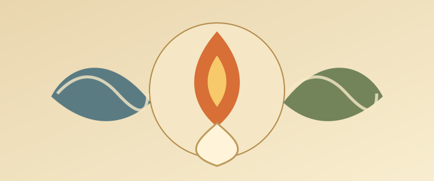
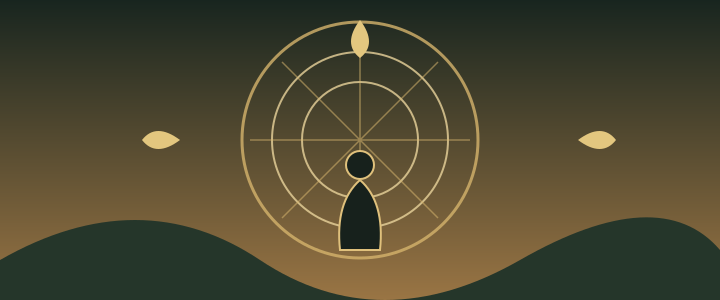
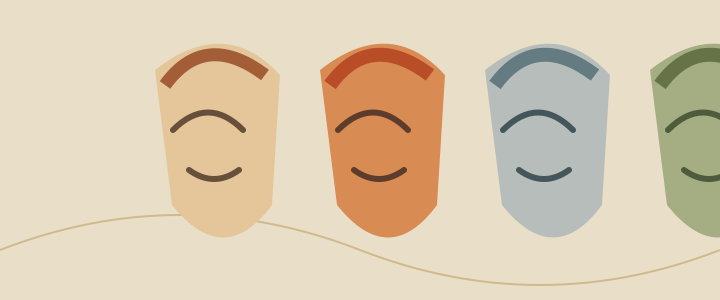
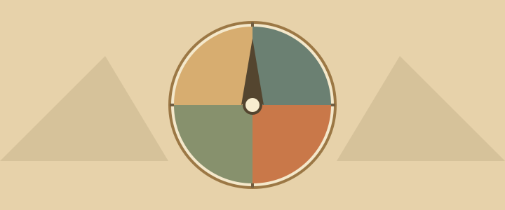

Ayurveda · Vata, Pitta e Kapha
Seu Dosha Ayurvédico
Descubra suas tendências físicas e mentais segundo os três princípios da tradição ayurvédica.
Fazer o teste❋ Quizuai
Questionários para explorar sua personalidade, suas ideias, seus padrões e sua maneira de estar no mundo.
Explore os questionários ↓

Ayurveda · Vata, Pitta e Kapha
Descubra suas tendências físicas e mentais segundo os três princípios da tradição ayurvédica.
Fazer o testeIdeias · Sociedade · Política
Investigue as dimensões do seu pensamento político e reconheça suas afinidades ideológicas.
Fazer o questionário
Personalidade · Quatro temperamentos
Conheça suas tendências predominantes a partir dos quatro temperamentos clássicos.
Fazer o questionário
Economia · Estado · Sociedade
Explore suas posições sobre economia, Estado, sociedade e instituições e descubra onde suas ideias se situam no espectro político.
Fazer o questionárioSímbolos · Motivações · Identidade
Identifique as motivações simbólicas que influenciam sua personalidade, suas escolhas e sua história.
Fazer o questionárioPsicologia analítica · Seis etapas
Uma investigação inspirada na psicologia analítica, passando por conceitos como persona, sombra e individuação.
Fazer o questionárioPsicanálise · Vida psíquica · Autoconhecimento
Explore aspectos da experiência psíquica em um questionário inspirado na teoria psicanalítica freudiana.
Fazer o questionárioPsicanálise · Desejo · Linguagem
Explore cinco dimensões da experiência subjetiva: desejo, o Outro, falta, linguagem e gozo.
Fazer o questionárioPsicologia corporal · Emoções · Vitalidade
Explore cinco dimensões dos seus padrões emocionais: couraça, expressão, intimidade, autonomia e prazer.
Fazer o questionárioPsicologia positiva · Bem-estar · PERMA
Explore cinco dimensões do florescimento humano: emoções positivas, engajamento, relacionamentos, sentido e realização.
Fazer o questionárioAutoconhecimento não é encontrar uma definição definitiva para si. É descobrir novas maneiras de compreender quem você é.
Os questionários do Quizuai são instrumentos de reflexão e exploração pessoal. Seus resultados não substituem avaliações profissionais nem devem ser tratados como diagnósticos.